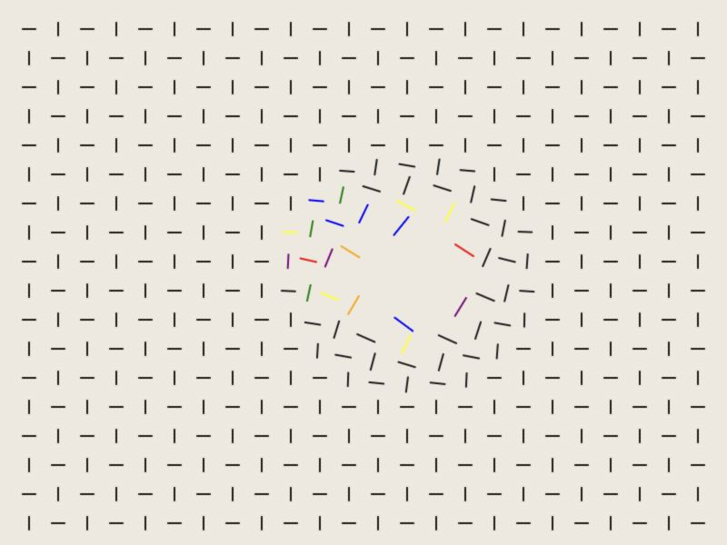

PROJECT 01
Particle Brush
Creative Coding I · 2026
A field of short lines reacts to the pointer. Nearby marks rotate, change color, and move away before easing back into the grid.
Interaction
Move the pointer across the canvas; click to push nearby marks outward.
Run the sketch in a new tab to interact with the original artwork.
- MEDIUM
- JavaScript / p5.js
- YEAR
- 2026
- TECHNIQUES
- Interactive Grid / Particles
- ORIGINAL TITLE
- Jeremy assignment3